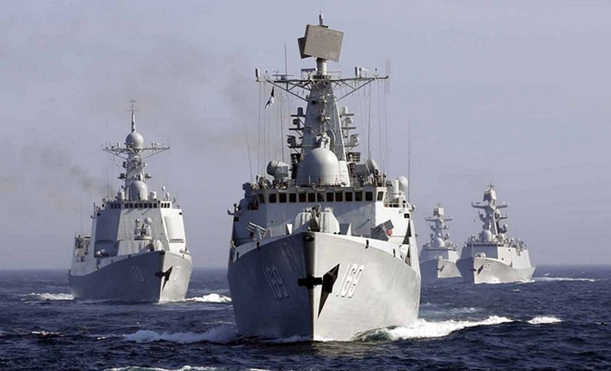

|
 THE RISING SEA DRAGON IN ASIA - 2014 UPDATE By Jeff Head - Last Update: January 28, 2014 |
 |
                
 2013 was another very busy and very significant year for the People's Liberation Army Navy (PLAN), or simply the Navy of the People's Republic of China. Again it cannot emphasized enough how important the building program, the training activities, and the deployments that have all gone on in this last year are to the to the future of the PLAN and its ability to project power, defend and assert its influence, and, as a blue water fleet, to carry that influence across the seven seas. In fact, in 2014, more than at any other time in history, the PLAN has been doing just that. The PLAN has sent task forces out in this last year on deployments around the south American continet into the Atlantic Ocean. Again and again on anti-pirating missions into the Gulf of Aden. Into the South China Sea in increasing numbers with large task forces centered on their new Amphibious assault vessels, their type 71 LPDs, and now for the first time in a joint task force consisting of their aircraft carrier and one of these LPDs. They have now ventured with surface action groups into the Mediterranean Sea and conducted operations in concert with the Russian Navy there. They have also conducted their own exercises in the Western Pacific Ocean in the last year beyond the second island chain, and in concert with the Russian Pacific fleet, conducted the largest joint naval exercises in Sea of Japan that the two nations have ever conducted together. Those exercises, called Joint Sea 2013, were held between July 5th and July 12th, 2013. China contributed four destroyers, two frigates and a replinishment vessel to the exercises. Russia contributed a Slava class cruiser, four more destroyers, three frigates, two corvettes, a nuclear powered attack submarine, and a replensihement vessel. Shore based aircraft, numerous helicopters based on the ships at sea, special operations soldiers from the ships at sea, and other elements of both nation's military also took part in the exercises which simulated anti-submarine warfare, the take-over and recovery of vessels at sea, and close manuervering drills. Both nations considered the exercises a success and very worthwhile.
PLAN Carrier Exercises and Operations: A fully marked up J-15 was first seen on deck, and it is clear that at least LRIP production of the J-15 is in progress if not full production, as numerous full painted and worked up J-15s have been seen in flight exercises ashore. It is expected that in 2014 more of these prodcution aircraft will be exercised on the Liaoning. It is expected that by the end of 2014, twenty-four of these J-15 aircraft will have been produced, and that six to twelve of those aircraft will be regularly operating off of the Liaoning deck by the end of the year. In addition, during 2013, the Liaoning was sent into the South China Sea to exercise with a Task Force consisting of Yuzhao Class LPDs and escorts consisting of two Type 052C guided-missile destroyers and two Type 054A guided missile frigates. This exercise was highly photographed and documented, and then published by the PLAN. The Chinese public received it very well and with a great deal of pride. During those exercises, there was an incident when a US Ticonderoga class cruiser, in an effort to get close to the task force and record the event electornically and perhaps photgraphically, was intercepted by LST type vessles which manuevered close in to the US vessel and apparently hazarded the US vessle to the point that the US protested the action. In the end, there was no damage to any vessel although the protest was officially lodged.
(Click on any image for a larger picture) 

 

 


PLAN continues Serial Production of Type 052D Gudied-missile Destroyer: The Type 52D appears to be set up to carry multiple missile type in their VLS as well, supposedly including quad packed medium ranged surface to air missiles like the US Navy ESSM, and surface to surface missiles as well, though they have not been seen in operation yet. These vessels continue to be priduced at an impressive build rate, and are contributing to a continued shift in the balance of naval power in the western Pacfic.


 


PLAN continues Serial Production, but approaching end of Type 054A Guided-missile Frigate build: Since that time, in the space of seven years, they have produced ninteen of these very capable frigates, which displace about 4,000 tons each, and have sent them throughout the western Pacific, into the Gulf of Aden on Anti-Piracy missions, and now into the Mediterranean Sea. 2014 has been a particularly banner year for their exercises and deploments in this regard. They are very modern, and very capable, and they are making the presence of the PLAN felt. What is widely believed to be the last vessel will be launched soon, and it is widely believed that an improved, Type 054B variant of the vessel will then follow.


 


In 2012 this author reported on the beginning of a new class of patrol craft/light frigate that the PLAN had started building. They were building them in four shipyards and had launched the first few vessels in the second half of 2012. In 2013 this continued with a vengence. By the end of 2013 and to this date, ninteen of these 1,450 ton vessels had been launched, and the 20th is about to be launched. Ten of them are already commissioned. The PLAN has shown no inclination of slowing up this production anytime soon. These vessels are the Chinese version of a Littoral Combat Ship and they are very well armed for the task. No "mission modules" on these vessel. No 500-600 million dollar cost. They carry four very effective and daangerous long range missiles to attack other ships. They carry a very effective 8-round anti-air missile launcher very similar to the US Navy RAM launcher. They have a rapid fire, dual-purpose 76mm main gun, and have two 30mm autocannons. They also have a landing pad (but no hanger) for an ASW or SAR helicopter and carry two triple launch torpedo tubes. These would be very dangerous foes in the littoral waters, and the Chinese are building them very rapidly. As it stands, they would be more than a match in weaponry for the US Navy LCS vessels which cost 3-4 times as much and do not carry the anti-surface combatant weaponry to match them. It is expected that the Chinese will build anywhere from 36-50 of these vessels over the nest three or more years.


 

 


PLAN continues to progress in its Nuclear and convetniona submarine building programs : The four Type 094 Jin Class ballistic missile submarines are now active with the fleet and are slated to begin ballistic missile patrols in 2014. They were in fact shown off for the first time in 2013 by the PLAN. Each of these vessels carry twelve JL-2 intercontinental ballistic missiles with a 8,000-12,000 kilometer range. But the PLAN is also moving forward in this regard with construction of the Type 096 Tang Class SSBN which will have 16 missile tubes. In addition to these nuclear submarines, the PLAN continues to move agressively forward with its conventional submarine forces. More new Type 041, Yuan Class SSK conventional submarines have also been produced in 2013, bringing the total of this class up to at least twelve boats. Late in the year, a newer variant was also seen that may represent an altogether new class with additional stealth features. With the twelve Yauns and the new boat, the 13 Songs and twelve Kilos, the PLAN now has thirty eight very modern and capable covnetionally powered diesel electric submarines, at least thirteen or more of which are air-independent powered units which are extremely dangereous combatants in the littoral waters of the western Pacific.


 

 


PLAN adds more large Fleet AOR replensihment vessels: 


PRC Air Force continues to add significant new equipment across the board.:
| ||


Copyright © 2005-2014 by Jeff Head
JEFFHEAD.COM Hit Counter
Jeff Head's Naval Sites Hit Counter
|